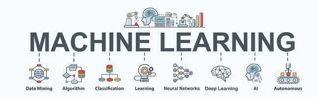

L'histoire du Machine Learning
Les débuts du Machine Learning

Les débuts du Machine Learning
Une avancée majeure dans le secteur de l'intelligence machine est le succès de l'ordinateur développé par IBM, Deep Blue, qui est le premier à vaincre le champion mondial d'échecs Garry Kasparov en 1997. Le projet Deep Blue en inspirera nombre d'autres dans le cadre de l'intelligence artificielle, particulièrement un autre grand défi : IBM Watson, l'ordinateur dont le but est de gagner au jeu Jeopardy!. Ce but est atteint en 2011, quand Watson gagne à Jeopardy! en répondant aux questions par traitement de langage naturel
L'évolution qu'il subit au cours des années
Durant les années suivantes, les applications de l'apprentissage automatique médiatisées se succèdent bien plus rapidement qu'auparavant.
En 2012, un réseau neuronal développé par Google parvient à reconnaître des visages humains ainsi que des chats dans des vidéos YouTube.
En 2014, 64 ans après la prédiction d'Alan Turing, le dialogueur Eugene Goostman (Il s’agit d’une intelligence artificielle russe créer en 2001 qui est un agent conversationnel) est le premier à réussir le test de Turing en parvenant à convaincre 33 % des juges humains au bout de cinq minutes de conversation qu'il est non pas un ordinateur, mais un garçon ukrainien de 13 ans.
En 2015, une nouvelle étape importante est atteinte lorsque l'ordinateur « AlphaGo » de Google gagne contre un des meilleurs joueurs au jeu de Go, jeu de plateau considéré comme le plus dur du monde.
Un exemple concret de Machine Learning : LipNet
En 2016, un système d'intelligence artificielle à base d'apprentissage automatique nommé LipNet parvient à lire sur les lèvres avec un grand taux de succès.
Au départ, il s'agissait de développer une intelligence artificielle capable de traduire automatiquement un texte ou simuler une voix presque humaine. Désormais, cette IA est donc capable de lire sur les lèvres (sans source sonore donc), révèle New Scientist. Le programme baptisé LipNet peut ainsi convertir les mouvements de lèvres en texte et s'en sort mieux qu'un spécialiste humain de la question. L'application obtient en effet un score de 47% de reconnaissance exacte contre 24% pour l'humain.
Voici une vidéo qui montre la façon dont LipNet réussi a lire sur les lèvres :
Le Machine Learning et Deep Learning, quelles sont leurs différences
La première fois que l’on parle de deep learning, c’est grâce à la professeure Rina Dechter en 1986. Ensuite, cette approche est mise en pratique par Yann LeCun en 1989. L’actuel boss de l’IA chez Facebook avait à l’époque utilisé un réseau de neurones artificiel profond afin de reconnaître les codes postaux écrits à la main sur des lettres. Un programme simple aujourd’hui, mais qui avait nécessité trois jours d’apprentissage.
Au départ, le réseau se trompe, beaucoup, vraiment beaucoup. À force de confronter ses résultats avec la réalité, à force de voir différentes images, il apprend. Que le feu de signalisation soit à l’horizontale, que l’image soit en noir et blanc, qu’il y ait une pluie battante, ou qu’il fasse nuit, il l’identifiera de mieux en mieux.
C’est à partir de ce fonctionnement, et grâce, encore une fois, au développement des capacités de calcul des ordinateurs, qu’est né le deep learning.
| Factors | Deep Learning | Machine Learning |
|---|---|---|
| Data Requirement | Requires large data | Can train on lesser data |
| Accurency | Provides high accuracy | Gives lesser accurency |
| Training Time | Takes longer to train | Takes less time to train |
| Hardware Dependency | Requires GPU to train properly | Trains on GPU |
| Hyperparameter Tuning | Can be tuned in vaious ways | Limites tuning capabilitues |